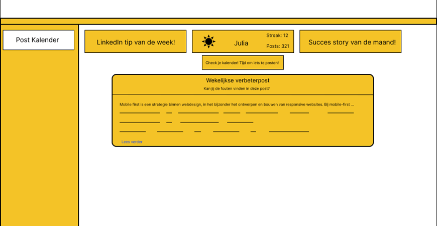
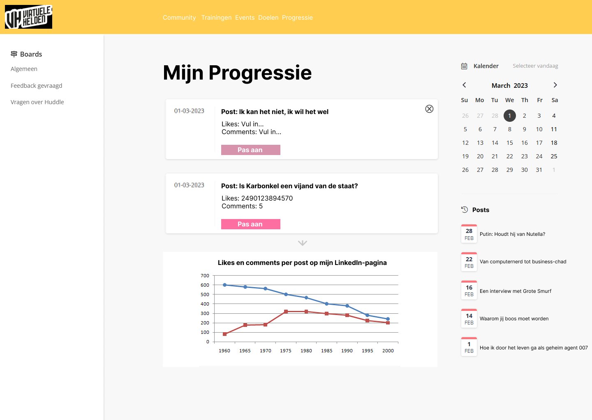
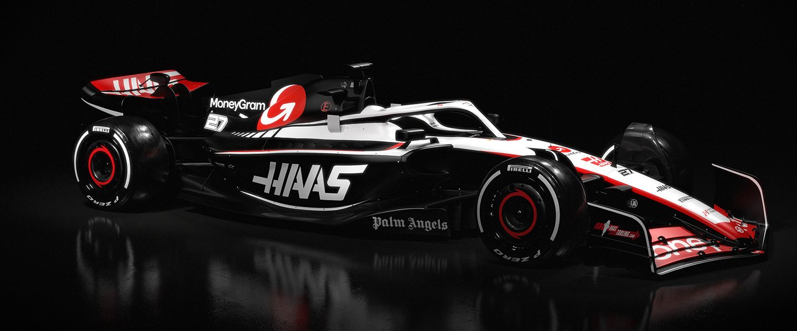

Concept 1: Quiz

Makkelijker kunnen we het niet maken, wel leuker! Daarom hebben wij deze Virtuele Helden quiz verzonnen om leden van de community te ondersteunen bij het vormen van hun brand. Per goed beantwoorde vraag zijn er punten te verdienen. Deze punten kun je vervolgens uitgeven in de shop om beloningen te kopen. De vragen zelf kunnen over verschillende onderwerpen gaan, dus bereid je goed voor! Uiteraard hoort bij dit concept ook een dashboard, waar de administrator vragen kan toevoegen, wijzigen en verwijderen.
Concept 2: Posts & stories
Wat is ervoor nodig om leden van een community betrokken te houden? Hier zijn meerdere antwoorden voor, maar zonder goede content kom je niet ver. Volgens ons is hier nog winst te halen voor Virtuele Helden. Daarom hebben wij meerdere invullingen verzonnen. Plaats bijvoorbeeld succes stories vanuit de community op je socials, of zet elke maand een lid in het zonnetje. Als community event kun je bijvoorbeeld wekelijks een LinkedIn-post gaan verbeteren op fouten. Er zijn nog meer ideeën te verzinnen, maar belangrijk hierbij is consistentie! Bij dit concept hoort ook een kalender, waarop de standaardcontent weergegeven wordt (zoals elke woensdag een verbeterpost) maar die ook voor persoonlijk gebruik geschikt is.
Concept 3: Leerdoelentraject
Iedereen die lid wordt van de community doet dat met een wens of een missie. Maar niet iedereen weet precies hoe daar te komen. Om deze reden hebben wij het leerdoelentraject verzonnen! Zowel nieuwe als bestaande leden kunnen een gesprek aanvragen met Roel om persoonlijke doelen op te stellen. Hier wordt een dashboard voor ontwikkeld. Ook kun je in dit dashboard feedback vragen op je doelen en bijhouden wat je al bereikt hebt. Met het oog op privacy kunnen de doelen zichtbaar zijn voor andere leden, maar ook verborgen worden. Tot slot hoort hier nog een kalender bij, zodat je datums kunt koppelen aan je doelen, en zullen er natuurlijks voortgangssgesprekken mogelijk zijn.
Meet the team!
-

Timo Wieme
Hi, mijn naam is Timo. Ik ben de scrummaster voor ons project. Met deze rol zorg ik dat de planning goed up-to-date is en we niet achter komen te lopen. Ook verzorg ik voor elke meeting de stand-up! Ik ben verder vooral een Front-End developer en probeer wat meer te leren van de ontwerpfase!
-
Luc Karlas
Hoi, ik ben Luc, en ik ben de Tech Lead van ons project. Ik zorg ervoor dat al onze geprogrammeerde code netjes in het project terecht komt. Ik hou me verder vooral bezig met back-end programmeren, en in mijn vrije tijd game en sport ik graag.
-

Thomas De Haas
Hallo! mijn naam is Thomas. Ik ben de designer van de groep. Het zal dus mijn taak zijn om het ontwerp van het eind product zo mooi en gebruikersvriendelijk te maken! Ik wil ervoor zorgen dat het product goed oogt voor de gebruiker maar dat ze ook een fijne ervaring zullen hebben met het gebruiken van het product.